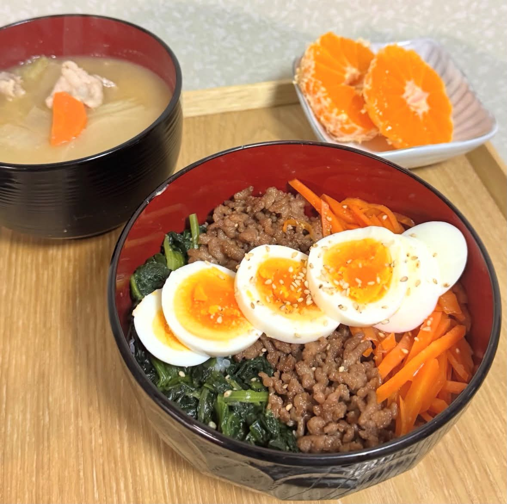
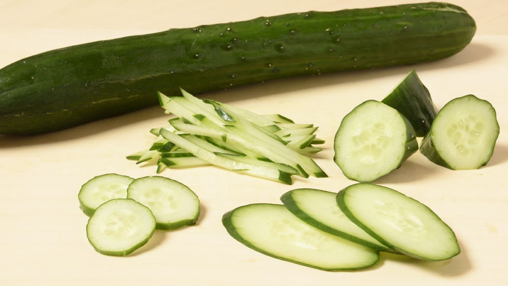
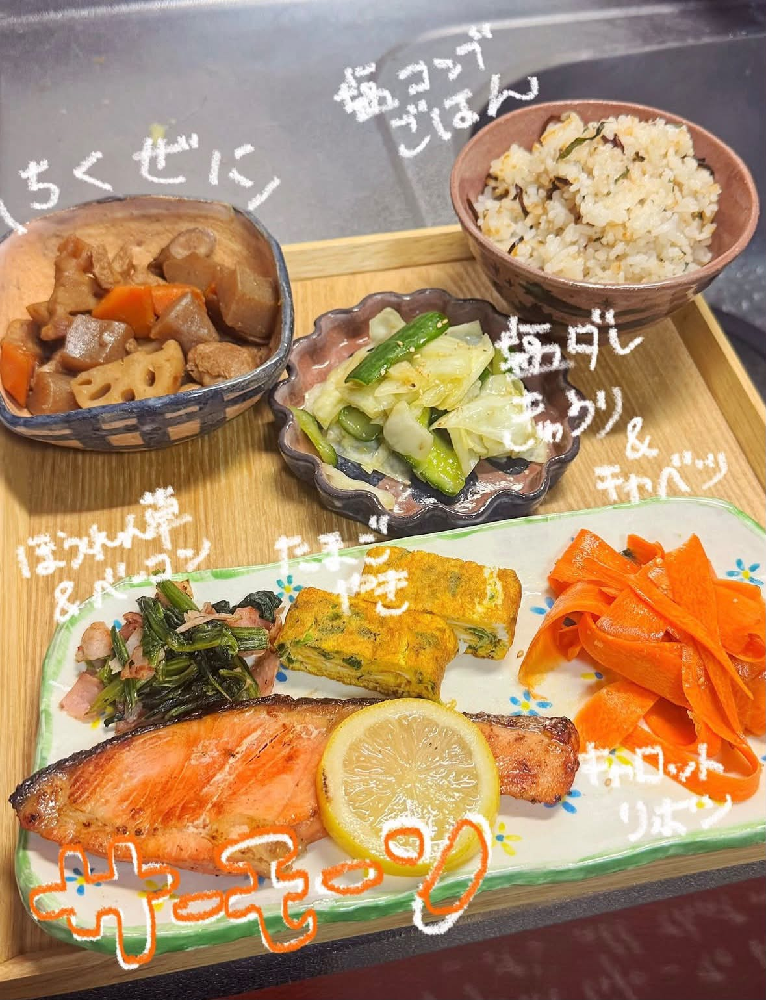
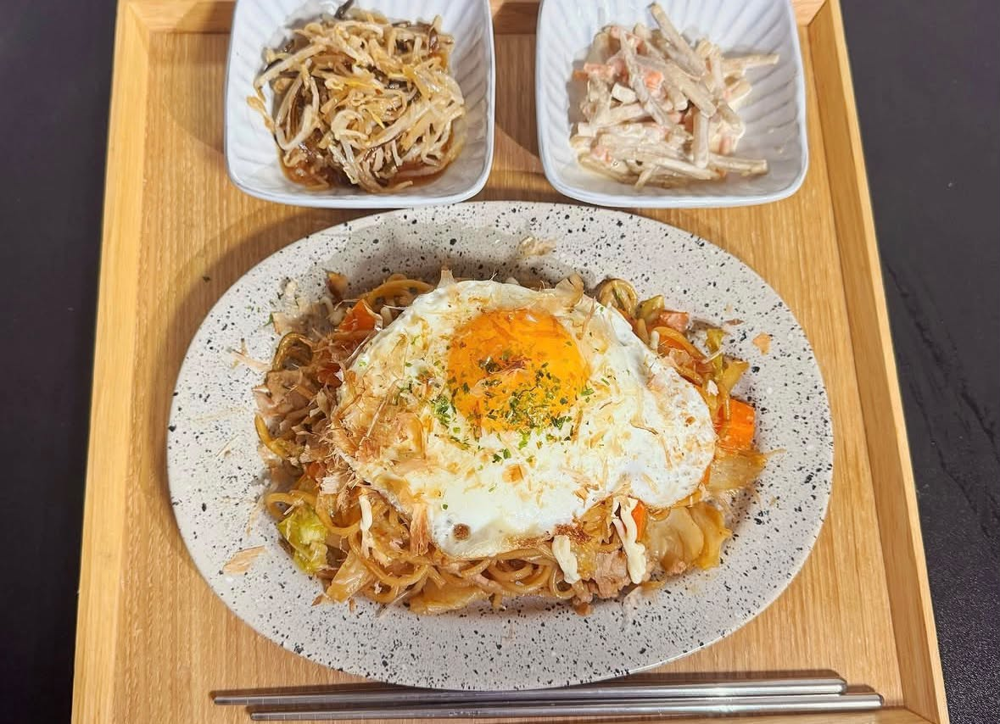
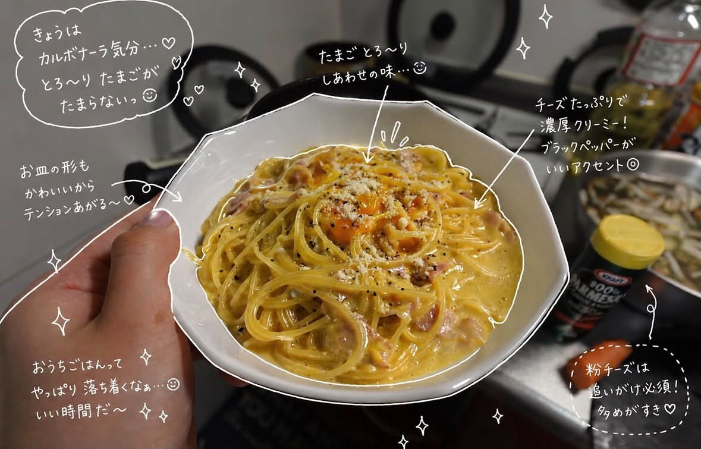
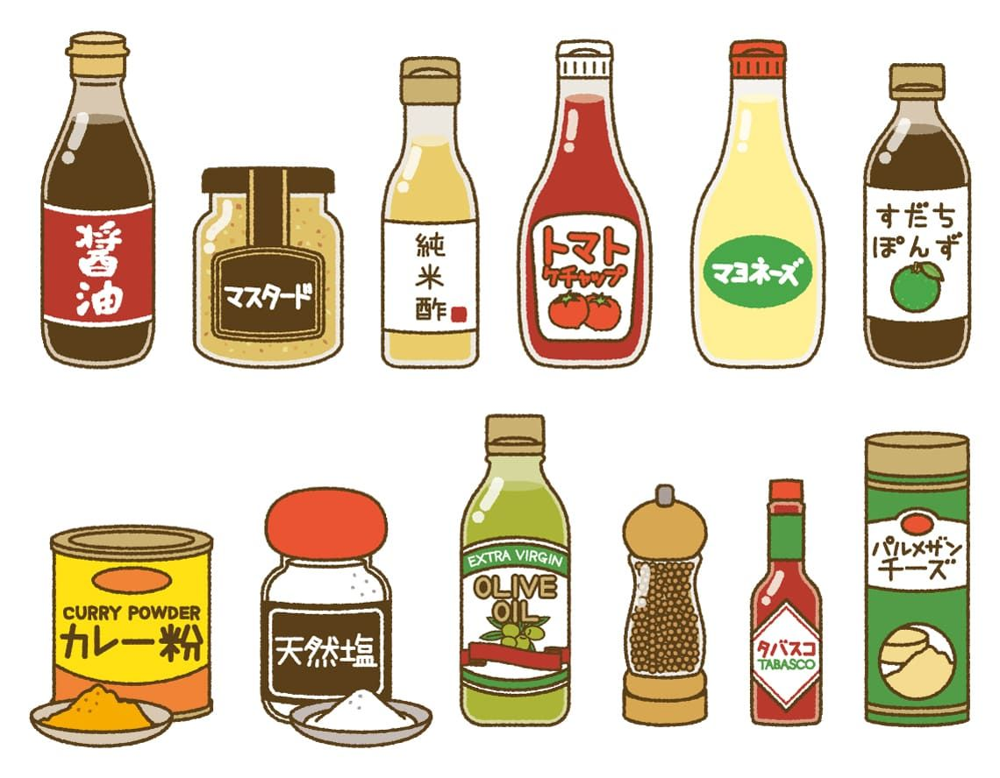

- トップ >
- 手料理日記
手料理日記
料理をする際におさえておきたいポイントをまとめています。
盛り付けのコツ

料理の盛り付けでは、高さを出して立体感をつくり、料理に動きを持たせることが大切です。また、赤・黄・緑などの色のバランスを意識すると、見た目が華やかになります。さらに、料理を詰め込みすぎず適度な余白を残すことで、洗練された印象を与えられます。主役となる食材を目立たせ、お皿との組み合わせも工夫することで、料理をよりおいしそうに見せることができます。
野菜の色々な切り方

野菜の切り方は、料理の見た目や食感、火の通り方に大きく影響します。料理に合わせて大きさや形をそろえて切ることで、均一に加熱でき、仕上がりが美しくなります。また、細切りや角切り、輪切りなど切り方を工夫することで、食感や味の感じ方に変化を与えることができます。そのため、野菜の特徴や料理の目的に合わせて適切な切り方を選ぶことが大切です。
余った食材でアレンジ編

余った食材を活用したアレンジは、食品ロスを減らし、食費の節約にもつながります。残った野菜や肉、ご飯などは、炒め物やスープ、チャーハンなどにアレンジすることで新しい料理として楽しめます。また、複数の食材を組み合わせることで栄養バランスも整えやすくなります。食材を無駄なく使い切る工夫をすることで、環境にも家計にも優しい食生活を実現できます。
節約ごはん

節約ごはんは、限られた予算の中でも栄養バランスや満足感を意識しながら食事を作る工夫です。比較的安価な食材であるもやし、豆腐、卵、鶏むね肉などを活用することで、食費を抑えながらボリュームのある料理を作ることができます。また、まとめ買いや作り置きを取り入れることで無駄な出費や食品ロスを減らせます。節約を意識しながらも、食材の組み合わせや調理方法を工夫することで、おいしく満足感のある食事を楽しむことができます。
一人暮らしごはん

一人暮らしごはんは、手軽さと栄養バランスを両立させることが大切です。限られた時間や予算の中でも、野菜やたんぱく質を取り入れた食事を意識することで、健康的な食生活を送ることができます。また、作り置きや冷凍保存を活用すれば、調理の手間を減らしながら食材を無駄なく使うことができます。簡単に作れておいしく、毎日の生活を支える実用的な食事づくりが、一人暮らしごはんの魅力です。
7/16 健康を意識した和定食
親子丼
親子丼をメインに、味噌汁や冷奴、小鉢を添えた和食献立です。親子丼は、だし・しょうゆ・みりん・砂糖で甘辛く味付けし、ふんわりとした卵で仕上げました。副菜と合わせることで栄養バランスも良く、満足感のある一食になりました。

調味料の使い分け

調味料の使い分けは、料理の味わいを豊かにし、食材の魅力を引き出すために重要です。醤油は香りやコクを加え、塩は素材本来の味を引き立てます。また、砂糖やみりんは甘みと照りを与え、酢はさっぱりとした風味を加えます。料理の種類や目的に応じて調味料を適切に使い分けることで、味のバランスが整い、よりおいしい仕上がりになります。